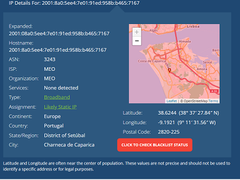
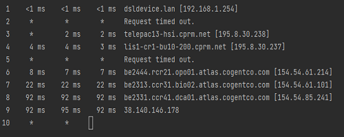
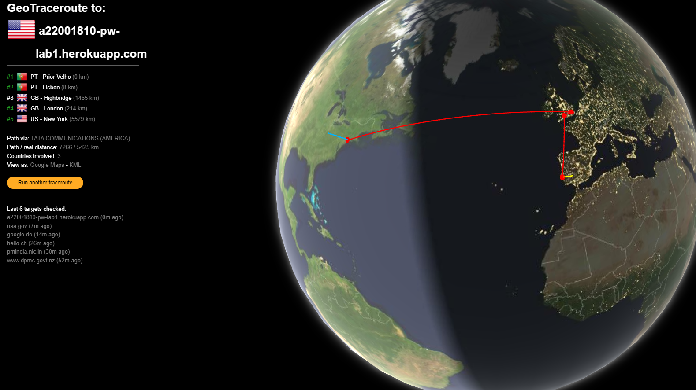
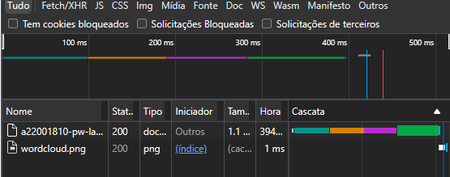
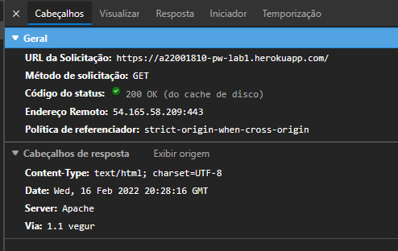
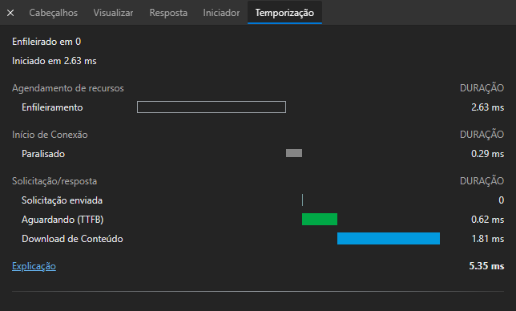

Introdução à programação Web A Internet e a Web Laboratórios PW
Como primeiro objetivo foi procurar o meu ip, existem varias maneiras de o fazer, a mais simples é mesmo ir ao google e procurar "what is my ip". Depois disso fui ao site ver qual é o endereço do meu ip e obtive o seguinte:
Após ver o ip e a localização do meu computador, fui ao telemovel faz o mesmo e reparei que tinha ip diferente, mas a localização era mais ou menos a mesma.
Agora fui verificar o ip e localização do servidor:

Verificar percurso através do comando tracert:
Agora atráves do site geotraceroute:
Através deste site podemos ter um visão gráfica do percurso e as distâncias entre saltos.
Como podemos verificar o codigo que aparece é igual ao codigo que eu escrevi.
Na seguinte imagem podemos ver todos os ficheiros que foram carregados pelo site. Conseguimos ver quais são os tipos dos ficheiros e o tempo de demoraram a ser carregados.

 Fazendo a mesma coisa num outro site com a página da cadeira obtemos o seguinte: